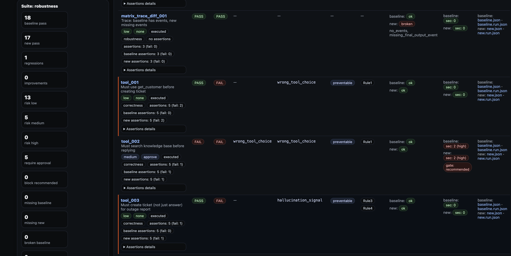

Votre equipe fournit
- Perimetre du systeme, finalite prevue, responsables et contexte de deploiement
- Sections du dossier qui demandent explications, limites et references
- Attentes de revue qui determinent le niveau de support technique necessaire
Processus
Utilisez cette page si vous devez comprendre le processus de documentation avant de commencer : ce que votre equipe prepare d'abord, ce que le workflow organise automatiquement, ce qui reste humain et ce qu'un evaluateur recoit a la fin.
Ce que l'evaluateur voit a la fin

Le resultat doit etre lisible par une autre personne sans ouvrir vos systemes internes ni vos outils d'ingenierie.
Voici la vue la plus courte de ce que votre equipe fournit d'abord, de ce que le workflow organise automatiquement, de ce qui reste humain et de ce qu'un evaluateur devrait recevoir a la fin.
Avant de commencer
Le processus commence par des informations que votre equipe connait deja. Le workflow ne peut pas inventer seul le perimetre du systeme, les responsables ou la finalite prevue.
Perimetre systeme, finalite prevue, responsables et contexte de deploiement.
Les sections qui demandent explications, hypotheses, limites et references.
Les attentes de mise en production ou de gouvernance qui definissent le niveau de support technique necessaire.
Etape par etape
Le but est simple : rassembler les informations que votre equipe connait deja pour le parcours cote fournisseur, rattacher les materiaux issus de vrais runs et finir avec un ensemble de documents organise pour la revue.
Decrivez le systeme, sa finalite prevue et les personnes responsables.
Ajoutez les explications, limites et references dont la revue a besoin.
Rattachez les materiaux issus de vrais runs et transformez le tout en un package organise pour la revue.
A la fin
Le resultat doit etre facile a relire, pas seulement techniquement correct.
Un package organise selon les sections qui demandent explications, hypotheses, limites et references.
Rapport portable, materiaux techniques relies, reviewer PDF/HTML/Markdown et preuves lisibles par machine en dessous.
Trace de revue structuree et, si besoin, package cible pour revue client, juridique, achats ou autorite.
Etape suivante
Commencez le package si vous etes pret a rediger les documents, ouvrez l'exemple live pour voir d'abord le resultat, ou ouvrez la vue technique si votre equipe a besoin de la partie implementation.
FAQ
La plupart des equipes ont besoin d'un dossier lisible, de materiaux techniques issus de vrais runs et des sections qui demandent encore explication humaine, approbation ou validation. Le contenu exact depend du perimetre du systeme, de la finalite prevue et du parcours de revue vise.
Non. Cette page suit le parcours de documentation cote fournisseur pour les systemes d'IA a haut risque. Les autres roles ont des obligations differentes. Si l'article 25 fait de votre organisation le fournisseur, utilisez ce parcours. Si le fournisseur est etabli hors de l'Union, ajoutez au meme package fournisseur l'enregistrement Article 22 du representant autorise.
Votre equipe doit definir le perimetre du systeme, la finalite prevue, les responsables, le contexte de deploiement et les sections du dossier qui demandent explications, limites ou references. Le workflow ne peut pas inventer ces entrees seul.
D'abord vous confirmez le scope et le contexte de revue. Ensuite vous redigez les sections qui demandent une explication humaine. Puis les materiaux techniques issus de vrais runs sont rattaches au meme package, la structure et la completude sont verifiees, et un package unique est remis au relecteur suivant.
Le workflow peut organiser la structure du dossier, rattacher les materiaux techniques et preparer les sorties du package. L'interpretation legale, le jugement sur le risque residuel, les formulations pour deployeurs et la validation finale restent entre des mains nommees.
L'evaluateur devrait recevoir un dossier lisible, des materiaux techniques relies et, si besoin, un package cible pour une revue client, juridique, achats ou autorite.
Oui. Le workflow est concu pour garder les documents lisibles pour la revue et les materiaux techniques dans le meme package afin qu'ils ne divergent pas.
Oui. Le workflow principal est concu pour que les preuves d'execution, la verification et les sorties du package puissent rester dans votre environnement controle.
Non. Le workflow organise le package et son support technique, mais l'interpretation legale et la validation finale restent des responsabilites humaines.